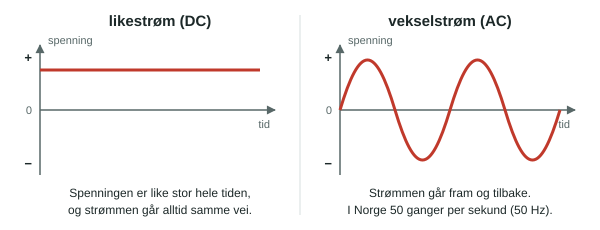
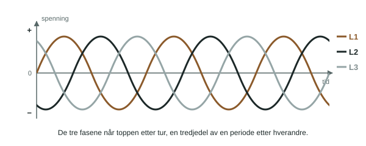

Likestrøm, vekselstrøm og trefase
Batteriet, stikkontakten og pumpemotorene i anlegget bruker ikke samme slags strøm. Her lærer du forskjellen på likestrøm og vekselstrøm, hvorfor industrien bruker trefase på 400 V, og hvordan du finner omtrent hvor stor strøm en motor trekker.
Likestrøm og vekselstrøm
Likestrøm går hele tiden samme vei, fra pluss til minus. Spenningen er like stor hele tiden. Likestrøm kalles også DC, fra engelsk direct current.
Vekselstrøm går fram og tilbake. Spenningen går opp til en topp, ned gjennom null til en bunn, og opp igjen. Vekselstrøm kalles også AC, fra engelsk alternating current.

Hvor mange ganger per sekund vekselstrømmen går fram og tilbake, kalles frekvensen. Den måles i hertz (Hz). Strømnettet i Norge og resten av Europa har 50 Hz. Det betyr at strømmen går fram og tilbake 50 ganger hvert sekund.
| Likestrøm (DC) | Vekselstrøm (AC) |
|---|---|
| batterier, for eksempel i mobilen og i bærbart måleutstyr | stikkontakten (230 V) |
| strømforsyningen til givere og styresystem (24 V) | motorer, pumper og vifter i anlegget (400 V) |
| elektrolyse, for eksempel når aluminium lages | hele strømnettet, fra kraftverket og fram til bygget |
Elektrolyse må ha likestrøm, fordi strømmen må gå samme vei hele tiden for at reaksjonen skal gå. Det kan du lese om på siden Elektrolyse i Kjemiske prinsipper. En lader for mobilen gjør om vekselstrøm fra stikkontakten til likestrøm.
Hvorfor strømnettet bruker vekselstrøm
Vekselspenning kan lett gjøres høyere eller lavere i en transformator. Det er den viktigste grunnen til at strømnettet bruker vekselstrøm.
Fra kraftverket sendes strømmen over lange avstander med svært høy spenning, for eksempel 420 000 V. Med høy spenning trengs det mindre strøm for å overføre den samme effekten, fordi \( P = U \cdot I \). Mindre strøm gir mindre varme i ledningene, og da går mindre energi tapt på veien. Nær forbrukerne setter transformatorer spenningen ned i flere trinn, til slutt til 230 V og 400 V.
Trefase
I industrien kommer strømmen inn på tre ledere med vekselspenning. Hver av dem kalles en faseleder, og de merkes L1, L2 og L3. Spenningene i de tre fasene er like store, men de når toppen etter tur. Dette kalles trefase.

I industrien er det vanligst med disse spenningene:
- 400 V mellom to faseledere. Det brukes til motorer og annet stort utstyr.
- 230 V mellom én faseleder og en egen leder som kalles nøytralleder. Det brukes til stikkontakter, lys og mindre utstyr.
I mange eldre norske boliger er strømnettet bygd på en annen måte, med 230 V mellom fasene og ingen 400 V. I industrien er 400 V det vanlige.
Hvorfor motorene bruker trefase
Med trefase er det alltid minst én fase som er nær toppen. Derfor får en trefasemotor et jevnt «dytt» hele tiden og går jevnt rundt. En trefasemotor er enkel, robust og trenger lite vedlikehold. Nesten alle pumper, vifter og omrørere i prosessindustrien har trefasemotorer.
Turtallet til en vanlig motor bestemmes av frekvensen. Ved 50 Hz går en slik motor med et fast turtall, for eksempel ca. 1450 eller ca. 2900 omdreininger per minutt. En frekvensomformer endrer frekvensen og dermed turtallet. Det lærer du mer om på siden Elektromotorer i anlegget (kommer).
Hvor stor strøm trekker en trefasemotor?
For trefase regnes strømmen ikke med \( P = U \cdot I \) alene. Den nøyaktige formelen er mer innviklet. I praksis kan du bruke en tommelfingerregel:
En motor trekker omtrent 2 A per kW i hver faseleder. kW er effekten på typeskiltet.
Regelen tar med at motoren bruker litt mer enn den leverer. Den gir bare et overslag. Den nøyaktige strømmen står på typeskiltet.
Oppgave: Pumpe 2 har en motor på 2,2 kW, og pumpe 1 har en motor på 7,5 kW. Begge går på 400 V trefase. Hvor stor strøm trekker de omtrent?
Løsning:
- Pumpe 2: \( 2{,}2 \text{ kW} \cdot 2 \text{ A/kW} \approx 4{,}4 \text{ A} \) i hver faseleder.
- Pumpe 1: \( 7{,}5 \text{ kW} \cdot 2 \text{ A/kW} = 15 \text{ A} \) i hver faseleder.
Svar: Pumpe 2 trekker ca. 4,4 A og pumpe 1 ca. 15 A i hver faseleder. Sjekk tallene mot typeskiltet på motorene.
Sammenlign med en vanlig motor på 230 V. Med \( I = P/U \) fra siden Elektrisk effekt og energi ville den samme effekten på 2,2 kW gitt \( 2200 \text{ W} / 230 \text{ V} \approx 9{,}6 \text{ A} \), og enda litt mer fordi motoren har tap. Med trefase på 400 V deles effekten på tre ledere, og spenningen er høyere. Derfor blir strømmen i hver leder mye mindre, og kablene kan være tynnere.
400 V er enda farligere enn 230 V. Trefaseutstyr kobles ofte til med røde industrikontakter, mens blå industrikontakter har 230 V. Koble bare til og fra trefaseutstyr når prosedyren sier at du kan, og aldri når utstyret går. Arbeid inne i motorer, koblingsbokser og tavler skal bare gjøres av fagfolk med el-utdanning. Etter el-forskriftene er det bare autoriserte fagfolk som får arbeide på elektriske anlegg. Les mer på siden Elektrisk sikkerhet (kommer).
Test deg selv
Hvilken strøm går hele tiden samme vei?
- likestrøm
- vekselstrøm
- trefase
Likestrøm (DC) går hele tiden samme vei, for eksempel fra et batteri. Vekselstrøm og trefase går fram og tilbake.
Strømnettet har en frekvens på 50 Hz. Hva betyr det?
- Spenningen er 50 V.
- Strømmen går fram og tilbake 50 ganger per sekund.
- Strømmen er 50 A.
Frekvens er hvor mange ganger per sekund noe gjentar seg. 50 Hz betyr at vekselstrømmen går fram og tilbake 50 ganger hvert sekund.
Hvor stor er spenningen mellom to faseledere i et vanlig industrianlegg?
- 24 V
- 230 V
- 400 V
I industrien er det 400 V mellom to faseledere og 230 V mellom en faseleder og nøytralleder.
Pumpe 3 i pumperommet har en motor på 5,5 kW på 400 V trefase. Hvor stor strøm trekker den omtrent i hver faseleder?
- ca. 2,8 A
- ca. 11 A
- ca. 24 A
Tommelfingerregelen gir \( 5{,}5 \text{ kW} \cdot 2 \text{ A/kW} = 11 \text{ A} \). Den nøyaktige strømmen står på typeskiltet.
Hvorfor sendes strømmen over lange avstander med svært høy spenning?
- Fordi høy spenning er tryggere.
- Fordi det da trengs mindre strøm, og mindre energi går tapt som varme i ledningene.
- Fordi kraftverkene bare kan lage høy spenning.
Med \( P = U \cdot I \) trengs det mindre strøm for samme effekt når spenningen er høy. Mindre strøm gir mindre varme i ledningene.
Ordliste
| Begrep | Forklaring | Engelsk |
|---|---|---|
| likestrøm | Strøm som hele tiden går samme vei, for eksempel fra et batteri. Kalles også DC. | direct current (DC) |
| vekselstrøm | Strøm som går fram og tilbake mange ganger i sekundet. Strømnettet bruker vekselstrøm. Kalles også AC. | alternating current (AC) |
| frekvens | Hvor mange ganger per sekund noe gjentar seg, for eksempel hvor mange ganger vekselstrømmen går fram og tilbake. Måles i hertz (Hz). | frequency |
| hertz | Enheten for frekvens. 1 Hz er én gang per sekund. | |
| transformator | Et apparat som gjør vekselspenning høyere eller lavere. | transformer |
| trefase | Tre vekselspenninger som er like store, men når toppen etter tur. Brukes til motorer og annet stort utstyr i industrien. | three-phase |
| faseleder | En av de tre lederne med vekselspenning i et trefasenett. De merkes L1, L2 og L3. | phase conductor |
| frekvensomformer | Utstyr som endrer hvor fort en elektrisk motor går. Brukes til å styre pumper. | variable frequency drive (VFD) |
Les mer
- Elektromotorer i anlegget (kommer) bygger videre på denne siden.
- Elektrolyse i Kjemiske prinsipper viser hva likestrøm brukes til i kjemisk industri.
Om kildene: Teksten, eksemplene og figurene på denne siden er laget for dette nettstedet. Effekten på pumpene er hentet fra pumperommet på skolen. Tommelfingerregelen gir bare et overslag. Siden bygger på undervisningsopplegg i kjemiprosess- og laboratoriefag ved Sauda vgs, som er utarbeidet med utgangspunkt i blant annet Kjemien stemmer, Laboranten og åpne nettkilder.